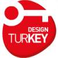
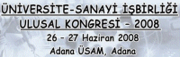

25-28 Aralýk 2008 > SinerjiTürk-Savunma'08 etkinliði
Yer:
Antalya RIXOS PREMIUM
Savunma, uzay ve havacýlýk konularýna odaklanan SinerjiTürk-Savunma'08 etkinliði, Milli Savunma Bakaný Sayýn Vecdi Gönül ve Savunma Sanayi Müsteþarý Sayýn Murad Bayar'ýn katýlýmlarý ile, 25-28 Aralýk 2008 tarihleri arasýnda Antalya RIXOS PREMIUM'da gerçekleþecek.
Savunma, uzay ve havacýlýk alanýnda çalýþmalarýný sürdüren birçok ülkeden Türk iþadamlarýný, yöneticileri ve akademisyenleri bir araya getirecek SinerjiTürk-Savunma'08, ekonomik krizde yeni iþ fýrsatlarý oluþturacaktýr.
Etkinlik programý için týklayýnýz;
www.sinerjiturk.org.tr/etkinlik_programi.asp
Etkinlikteki bazý sunumlarý aþaðýdaki sayfadan indirebilirsiniz;
www.sinerjiturk.org.tr/sunumlar_savunma08.asp
Ýritbat:
Abdullah Raþit Gülhan
SinerjiTürk-Savunma Sekreterya Eþ Baþkaný
SinerjiTürk
www.sinerjiturk.org.tr
Lütfi Varoðlu
SinerjiTürk-Savunma Sekreterya Eþ Baþkaný
Savunma Sanayi Müsteþarlýðý
www.ssm.gov.tr
03 - 05 Kasým 2008 > ARGEGG'08 Ar-Ge ve Giriþimcilik Günleri:
Yer: YTÜ Beþiktaþ Yerleþkesi Oditoryumu, Beþiktaþ Ýstanbul
(Program: > 3 Kasým: Ar-Ge,
4 Kasým: Giriþimcilik,
5 Kasým: KOBÝ Yönetimi)
Organizasyon:
YTÜ Makine Teknolojileri Topluluðu > www.makineteknolojileri.org
Destekleyenler:
YTÜ Makine Fakültesi Dekanlýðý > www.mak.yildiz.edu.tr
KOSÝD > www.kobi-kosid.com
TOYSÖV > www.tosyov.org.tr
TurkCADCAM.net
Etkinliðin amacý, ülke ekonomisinin ve sanayisinin atýlýmý için yapýlmasý gereken iþlerden biri de yenilikçilik ve Ar-Ge kültürüne dayalý giriþimciliðin desteklenmesidir.
ARGEGG '08 etkinliðinde Ar-Ge ve giriþimcilik kavramlarý, destek politikalarý ve Ar-Ge'nin rekabet için önemi tartýþýlacak ve öðrenci ile etkileþimli bir iþbirliði ve görevdeþlik yaratýlmasý saðlanacaktýr...
Sunum Konularý:
- Ar-Ge'nin önemi ve saðlanan destekler
- Giriþimciliðin önemi ve saðlanan destekler
- Teknoparklarýn rolü ve sorunlarý
- Patent'in önemi ve sanayiye saðladýðý itici gücü
- KOBÝ'lerin sorunlarý, mevcut politikalar ve çözüm önerileri
- Üniversite-Sanayi iþbirliði ve mevcut sorunlar
- Eðitim sisteminde Ar-Ge ve giriþimcilik kültürünün yeri
- Bilgisayar yazýlýmlarýnýn Ar-Ge'deki önemi
- Mühendislik ve Teknoloji Yönetimi
- Tersine mühendisliðin Ar-Ge'deki önemi
- Ar-Ge ve giriþimcilikte elde edilen baþarý örnekleri
Güncel etkinlik takvimi: www.argegg08.org/index.php....
Daha fazla bilgi için: www.argegg08.org
22 Ekim 2008 > Design Turkey Endüstriyel Tasarým Ödülleri Sergisi ve Konferansý:
Saat: 09:00 - 17:30
Yer: Antrepo No:5, Ýstanbul
Sergi: 22 Ekim - 2 Kasým 2008, 10:00 - 18:00,
Antrepo No:5, Ýstanbul
Türkiye'de ilk kez Devletin, endüstrinin ve tasarýmcýlarýn bir araya gelerek gerçekleþtirdiði Design Turkey Endüstriyel Tasarým Ödülleri, TURQUALITY® Programý dahilinde, Dýþ Ticaret Müsteþarlýðý (DTM), Türkiye Ýhracatçýlar Meclisi (TÝM) ve Endüstriyel Tasarýmcýlar Meslek Kuruluþu iþbirliðiyle düzenlenmektedir. Türkiye'de kullanýcýnýn ihtiyaçlarýný gözeten, ihracatta ve ulusal pazarda ürüne katma deðer ve rekabetçi üstünlük kazandýran iyi tasarýmý ödüllendirmeyi amaçlayan bu ödül sistemi ayrýca Türkiye'de ilk kez ürünlerin sergide sektörel bazda deðerlendirilmesini ve baþvuru ve deðerlendirme surecinin Ýnternet üzerinden yürütülmesini, dijital olarak belgelenmesini ve arþivlenmesini saðlamaktadýr.
Tüm meslektaþlarýmýzý, ülkemiz endüstrisinin deðerli üreticilerini, tasarýma yatýrým yapan tüm giriþimcileri, endüstriyel tasarým eðitimcilerini ve öðrencilerini ve tasarým kullanýcýlarýný Design Turkey Endüstriyel Tasarým Ödülleri Sergisi ve Konferansý'na davet ediyoruz.
Design Turkey Yürütme Kurulu Üyeleri;
Gülay Hasdoðan (ETMK Baþkaný)
Berna Dalaman (ETMK Baþkan Yardýmcýsý)
Sertaç Ersayýn (ETMK Ýstanbul Þubesi Baþkaný)
Design Turkey
www.designturkey.org.tr
SERGÝ:
22 Ekim - 2 Kasým 2008, 10:00 - 18:00,
Antrepo No:5
Design Turkey 2008 Ödüllerine baþvuran ve ön elemeyi geçen 311 adet ürün ve 25 adet kavramsal tasarým projesinin davet edildiði sergide 30 seçkin uzmandan oluþan uluslararasý jürinin deðerlendirmesiyle verilen Ýyi Tasarým Ödülü, Üstün Tasarým Ödülü ve TURQUALITY Tasarým Ödülü alan ürünler ve Kavramsal Tasarým Ödülü alan projeler de belirlenmiþ olacak.
KONFERANS:
22 Ekim, 9:00 - 17:30,
Antrepo No:5
Tasarým: Bilinç, Strateji ve Baþarý
Design: Sense, Strategy and Success
Konferans, tasarýmýn firma ölçeðinde nasýl baþarý getirdiðini ve ulusal ekonomi ve endüstrinin geliþimine nasýl katkýda bulunduðunu baþarý hikayeleri ile ortaya koymayý amaçlamaktadýr.
Konferans Yöneticisi:
Tevfik Balcýoðlu (Ýzmir Ekonomi Üniversitesi, Güzel Sanatlar ve Tasarým Fakültesi Dekaný)
Davetli Konuþmacýlar:
John Heskett (The Hong Kong Polytechnic University, Bolum Baþkaný)
From Styling to Strategy: Developing Long-term Design Relationships in China
Stilden stratejiye: Cin'de Uzun Vadeli Tasarým Ýliþkileri Geliþtirme
Ron Kemnitzer (IDSA - Amerikan Endüstriyel Tasarýmcýlar Dernegi, Yönetim Kurulu Baþkaný)
"Design Brazil" - A New Relationship with IDSA's Industrial Design Excellence Awards
"Design Brazil" - IDSA'nýn Endüstriyel Tasarým Mükemmeliyet Ödülleri ile Yeni bir Baðlantý
Aldo Cibic (Cibic & Partners)
New Stories New Design: Imagining New worlds to Imagine New Products
Yeni Hikayeler Yeni Tasarýmlar: Yeni Ürünler için Yeni Dünyalar Hayal Etmek
Eero Miettinen (NOKIA Tasarým Direktörü)
Why are we Here?
Neden Buradayýz?
Owain Pedgley (Cool Acoustics, Danýþman Tasarýmcý; ODTÜ EUTB Öðretim Üyesi)
Cool Acoustics Polymer Guitars: A Fusion of Materials-Inspired Innovation with Industrial Design
Cool Acoustics Polimer Gitarlar: Malzemeden ilham alan Ýnovasyon ve Endustriyel Tasarimin Kaynasmasi
Ta-Wei Lin (CWI Lighting Design, Tasarým Direktörü)
Cultural Enlightenment: How Designers Reflect Culture
Kültürel Aydýnlanma: Tasarýmcýlar Kültürü Nasýl Yansýtýr?
Mark Breitenberg (ICSID Gelecek Dönem Baþkaný, Art Center College of
Design, Beþeri Bilimler ve Tasarým Bilimleri Fakültesi Dekaný)
"Design Education for International Engagement" The Design Matters Program at Art Center College of Design."
"Uluslararasý Baðlanma için Tasarým Eðitimi" Art Center College of Design'da Designmatters Programý"
Not: Sergi ve deðerlendirmeye davet edilen ürünleri görmek için týklayýnýz
03 - 05 Eylül 2008 > 13. Uluslararasý Makina Tasarýmý ve Ýmalatý Kongresi (UMTÝK 2008)
Yer: Harbiye Askeri Müze ve Kültür Sitesi, Ýstanbul
UMTÝK 2008'in amacý da dünyanýn her yerinden alanlarýnda tanýnmýþ seçkin akademisyenleri ve profesyonelleri bir araya getirerek makina tasarýmýnýn ve imalatýnýn, imalat sistem ve teknolojilerindeki son geliþmelerin tartýþýlabileceði bir forum oluþturmaktýr. Kongre aþaðýdaki konularý (bunlarla sýnýrlý kalmamakla birlikte) kapsamaktadýr:
- Üretim Süreçlerinin TasarýmýMakina Tasarýmý ve UygulamalarýMühendislik Tasarým Metodolojisi ve Tasarým ModelleriMakina Elemanlarý ve Mekanik Sistemlerin Tasarýmý, Modellenmesi, Analizi ve Hasar OluþumuMEMS'in Mekanik Tasarýmý ve ÜretimiÝmalat Sistemlerinin ve Proseslerinin Modellenmesi ve SimülasyonuBilgisayar Destekli Tasarým ve ÝmalatBilgisayar Tümleþik Ýmalat SistemleriEsnek ve Daðýtýk Ýmalat SistemleriMakina Tasarým ve Ýmalatýnda Akýllý SistemlerTasarým ve Ýmalatta Yeni Geliþen Teknolojiler
- Tasarým ve Ýmalatta Mühendislik Eðitimi
Tecrübe ve bilgi birikimlerini yaymak, paylaþmak ve yenilemek isteyen akademisyenler ve endüstride çalýþan mühendislerin bu foruma konuþmacý veya izleyici olarak katýlýmlarýný detsteklemekte ve beklemekteyiz
26 - 27 Haziran 2008 > Üniversite-Sanayi Ýþbirliði
Ulusal Kongresi - 2008
Yer: Adana ÜSAM, Adana
Üniversite-Sanayi Ýþbirliði Merkezleri Platformu (ÜSÝMP) tarafýndan düzenlenen bu kongrenin ülkemizde Üniversite-Sanayi iþbirliði çalýþmalarýnýn geliþmesine ve kurumsallaþmasýna hizmet edeceði düþünülmektedir.
Bildiri konularý aþaðýdaki temel dallarý ve bunlara yakýn diðer alanlarý kapsamakta ancak ilgili olmak kaydý ile bunlarla sýnýrlandýrýlmamaktadýr:
- Türkiye'de Üniversite-Sanayi Ýþbirliðine Yönelik Destek Politikalarýnýn Deðerlendirilmesi
- Üniversite Gözüyle Sanayi Ýþbirliði ve Sanayi Gözüyle Üniversite Ýþbirliði
- Teknoparklar ve Teknoloji Transfer Ofisleri
- Yeni Ar-Ge Kanunu
- Kurumsal Üniversite-Sanayi Ýþbirliði Deneyimi Olarak ÜSAM Programý ve Geliþimi
- Dünyada Kurumsal ÜSÝ Uygulamalarý
- Makro Ekonomik Dengeler ve Teknoloji Ýliþkisi
- Teknoloji Yönetimi
- Baþarý Örneklerinin Tanýtýmý
Kongre'deki bazý bildiri ve sunumlar aþaðýda listelenmiþtir:
- Öðretimden Ürüne Üniversite Sanayi Ýþbirliði
Refik Üreyen
(TTGV Ýstanbul Temsilcisi)
- Gemi Ýnþa ve Deniz Teknolojilerinde Üniversite - Sanayi Ýþbirliði
Yrd. Doç. Dr. Yalçýn Ünsan
(ÝTÜ Gemi Ýnþaatý ve Deniz Bilimleri Fakültesi)
- Üniversite Sanayi Ýþbirliðinde Savunma Sistem Tedariklerinin Saðlayabileceði Fýrsatlar
E. Mu. Tuðgeneral Aytekin Ziylan
(Emekli Muhabere Tuðgeneral)
- San-Tez Projesi: OSTÝM'de Kobilere Yönelik Sanal Fabrika Sisteminin Geliþtirilmesi
Arþ. Gör. M. Ural Uluer, Bahram Lotfi Sadigh
(ODTÜ, Makine Mühendisliði Bölümü),
Doç. Dr. D. Tayyar Þen
(ODTÜ, Endüstri Mühendisliði Bölümü),
Prof. Dr. S. Engin Kýlýç
(ODAGEM A.Þ., Ostim Ortak Araþtýrma Geliþtirme Merkezi A.Þ.)
- Yýldýz Teknik Üniversitesi Ýstanbul Sanayi Odasý Bitirme Tezleri Projesi
Prof. Dr Ahmet Topuz, Burçin Deðirmencioðlu
(Yýldýz Teknik Üniversitesi Endüstriyel Ýliþkiler ÝSO KOBÝ Hizmetleri)
- Üniversitelerimizde Staj Uygulamalarý ve Sanayi-Üniversite Ýþbirliði Açýsýndan Önemi
Dr. Zeynep Parlar, Öðr. Gör. Yusuf Ziya Kocabal,
Yrd. Doç. Dr. Vedat Temiz, Prof. Dr. Taner Derbentli
(Ý.T.Ü. Makina Fakültesi Konstrüksiyon Anabilim Dalý)
- Stratejik Araþtýrma Kurumlarý ve Uluslararasý Teknoloji Ýþbirliði Grubu
Prof. Dr. Yük. Mühendis M. Oktay Alnýak
(Bahçeþehir Üniversitesi Mühendislik Fakültesi)
- Meslek Yüksekokullarýnýn Sanayi Ýþbirliði ve Geliþtirilmesi
Öðr. Gör. Selahattin Beyaz
(Osmaniye Korkut Ata Üniversitesi, Düziçi M.Y.O.)
- Gaziantep Üniversite Sanayi Ýþbirliði Merkezi (GÜSAM) Örneðinden Yola Çýkarak
Üniversite Sanayi Ýþbirliði ve Teknoloji Politikalarýndaki Baþarýsýzlýk Nedenleri
Mak. Y.Müh. Semih Týlfarlýoðlu
(Makina M.O. Gaziantep Þube Yönetim Kurulu Yedek Üyesi, Sanayici, Portalin A.Þ.)
- Üniversite Sanayi Ýþbirliðinde Geliþmeyi Engelleyen Faktörler
Prof. Dr. Harun Taþkýn, Yrd. Doç. Dr. Berrin Denizhan,
Arþ. Gör. Dr. Ayten Yýlmaz Yalçýner, Arþ. Gör. Mehmet Rýza Adalý
(Sakarya Üniversitesi Müh. Fak. Endüstri Mühendisliði Bölümü)
- Üniversite-Sanayi Ýþbirliðinde Karþýlaþýlan Sorunlar ve Fýrsatlar:
Pamukkale Üniversitesi Öðretim Elemanlarý Üzerinde Bir Araþtýrma
Yrd. Doç. Dr. Þenol Okay
(Pamukkale Üniversitesi Makine Eðitimi Bölümü)
- KOBÝ'lerde Ýnovasyon Nasýl Teþvik Edilebilir?
Turgut Arslan, Selva Camcý
(KOSGEB-OMÜ Teknoloji Geliþtirme Merkezi)
- En Büyük Dershane ve Laboratuar Sanayidir
Prof. Dr. Necati Tahralý
(Yýldýz Teknik Üniversitesi Makine Fakültesi)
- Yenilik Sistemi Yaklaþýmý Çerçevesinde Üniversite - Sanayi Ýþbirliði
ve Karþýlýklý Tutum Analizi: Süleyman Demirel Üniversitesi ve Isparta Ýmalat Sanayi
Doç. Dr. Murat Ali Dulupçu, Arþ. Gör. Onur Demirel, Aykut Sezgin
(Süleyman Demirel Üniv, ÝÝBF, Ýktisat Bölümü)
- Üniversite Sanayi Ýþbirliði Geliþimi Ýçin Neden Ar-Ge Yapmalýyýz?
Timuçin Bayram
(Uzel Makine Sanayi A.Þ., Ýstanbul)
- Temsa San. ve Tic A.Þ..'de Teknoloji Yönetimi
Ýbrahim Eserce
(Temsa San ve Tic A.Þ., Otomotiv Teknoloji Müdürü)
- Türk Makine Sektöründe Bir Kalite Markasý Olarak Turqum
Mahmut Akýllý
(Orta Anadolu Ýhracatçý Birlikleri Genel Sekreteri)
Daha fazla bilgi için:
13 Haziran 2008 (09:30-17:00) > Seminer > Teknoloji ve fikri haklar yönetim stratejileri:
Yer: Ýstanbul Ticaret Odasý, Reþadiye Cad., Eminönü, Ýstanbul
Bu seminer, Prof. Dr. Heinz Goddar, Prof. Dr. Ruhi Kaykayoglu, Dr. Jochen M. Schaefer, Dr. Marcus Jacobi ve Ömer Hýzýroðlu'nun konuþmacý olarak katýldýklarý, ÝTO himayesinde "Teknoloji ve Lisans Yöneticileri Derneði" ve "Licensing Executives Society International" organizasyonunda düzenlenecektir.
Program:
- 09:30 - 10:00 Registration Opening Speeches (Açýlýþ konuþmalarý)
Welcome by ÝTO & Ersin Dereligil (President of TEKLÝDER)
Session 1 Building Up IP Strategies
- 10:00 - 10:30 Creating and Structuring IP Strategies in Companies (Firmalarda fikri haklara iliþkin stratejilerin oluþturulmasý ve yapýlandýrýlmasý)
Dr. Marcus Jacobi (Isenbruck, Bösl, Hörschler, Wichmann, Huhn, Germany)
- 10:30 - 11:00 Brand And Technology Protection / Enforcement (Marka ve Teknolojinin Korunmasý / Yaptýrýmlar)
Dr. Jochen Schaefer (Hogan & Hartson Raue LLP, Germany)
- 11:00 - 11:30 Industry and University Cooperation (Sanayi ve Üniversite Ýþbirliði)
Prof. Dr. Heinz Goddard (Boehmert & Boehmert, Germany)
- 11:30 - 12:00 Q&A and Reserve Time (Soru ve Cevaplar)
- 12:00 - 13:30 Lunch Break (Ögle Yemeði)
Session 2 R&D Strategies
- 13:30 - 14:00 Management of Nascent Technologies: Role of Technology Incubation Centers in Turkey (Gelisen Teknolojilerin Yönetimi: Türkiye'de Enkübasyon Merkezlerinin Rolü)
Ömer Hýzýroglu (Inovent A.Þ.)
- 14:00 - 14:30 Successful R&D Strategies In Companies (Firmalar için baþarýlý Ar-Ge stratejileri)
Prof. Dr. Ruhi Kaykayoðlu (TechnoInvent A.Þ.)
- 14:30 - 15:00 Q&A and Reserve Time (Soru ve Cevaplar)
- 15:00 - 15:20 Coffee Break (Kahve Molasý)
Session 3 IP Valuation & Agreements
- 15:30-16:00: Valuation of Innovative Technologies
License Analogy based Approaches according to Employees' Inventions Remuneration Calculation in Germany
(Ýnnovatif Teknolojilerin Degerlemesi)
Prof. Dr. Heinz Goddard (Boehmert & Boehmert, Germany)
- 16:00-16:30: Licensing Agreements in Technology (Teknoloji ve Lisans Anlaþmalarý)
Dr. Jochen Schaefer (Hogan & Hartson Raue LLP, Germany)
- 16:30-17:00: Q&A and Reserve Time (Soru ve Cevaplar)
Detaylý bilgi ve baþvuru için;
Önemli notlar:
- Katýlým ücretsizdir ancak 60 kiþi ile sýnýrlýdýr. Ayný firmadan en fazla 2 kiþi katýlabilecektir.
- 10 Hazirandan sonraki baþvurular kabul edilmeyecektir
- Katýlýmcýlara baþvuru formlarýný kabulünü müteakip teyit gönderilecektir.
- Seminer dili Ýngilizce'dir. (Türkçe'ye simültane tercüme yapýlacaktýr)
- Öðle yemeði ÝTO tarafýndan verilmektedir.
RVSP (Lütfen teyit ediniz):
Ersin Dereligil
Teknoloji ve Lisans Yöneticileri Derneði
E-Posta: lesturkey@gmail.com
Faks: (224) 222 16 86
01-04 Haziran 2008 > Kongre > OTEKON'08 4. Otomotiv Teknolojileri Kongresi:
Yer: Almira Otel, Bursa
Uludað Üniversitesi Makine Mühendisliði Bölümü öncülüðünde organize edilen Otomotiv Teknolojileri Kongresi'nin amacý, otomotiv sektörü ile alakalý kiþileri ve kuruluþlarý bir araya getirmek, bu kiþiler ve kuruluþlar arasýnda bilgi alýþveriþini saðlayarak, otomotiv sektöründe ATG (Araþtýrma ve Teknoloji Geliþtirme) çalýþmalarýný geliþtirmeye katkýda bulunmaktadýr. Bu amacý gerçekleþtirmek için akademisyenler ile sektörde çalýþanlarý kongreye katýlmaya ve katkýda bulunmaya davet ediyoruz.
| Üretim Teknolojileri |
Alternatif Taþýt Güç Sistemleri |
| Motor ve Gövde Tasarýmý |
Otomotiv Eðitimi |
| Otomotiv Malzemeleri |
Otomotiv Endüstrisinde Yeni Teknolojiler |
| Taþýt Tasarým Teknikleri ve Optimizasyon |
Kontrol Sistemleri |
| Taþýt ve Motor Performansý |
Özel Amaçlý Taþýtlar (Raylý Taþýtlar, Askeri Taþýtlar v.b.) |
| Otomotiv ve Çevre |
Otomotiv Tekstili |
| Yakýt Teknolojileri |
Taþýt Test ve Simülasyonu |
| Taþýt Güvenlik Sistemleri |
Nano Teknolojileri |
| Yardýmcý Sistemler |
Diðer Konular |
Kongre Programý'ndan seçmeler:
- Bir Direksiyon Sisteminin Ýyileþtirilmesi Için Yeniden Modellenmesi Tasarýmý ve Denenmesi
Burak Yelken - Can Çoðun
- Bir Sürüþ Dinamiði Simülasyon Aracý Olarak Handsim
Erdem Uzunsoy -
Oluremi Olatunbosun
- Aðýr Ticari Araç Süspansiyon Braketi Dizayný ve Analizi
Ýmdat Taymaz - Fýrat Elhüseyni
- Bir Taþýt Yakýt Filtresi Baðlantýsýnýn Dinamik Etkiler Altýnda Modellenmesi
Ýmdat Taymaz - Mithat Koç
- Bilgisayar Destekli Otomotiv Transmisyon Tasarýmý (MS Word dökümaný, 600KB)
Adem Aygün - Bilgin Kaftanoðlu
Özet: Otomobillerde motorun ürettiði hareketin tekerleklere kadar iletilmesi gerekir. Bu iletimi saðlayan aktarma organlarý aracýn ömrü süresince yorulmaya, yenime, aþýrý yüklemelere maruz kalýr. Bu çalýþmada aktarma organlarýndan; debriyaj, diþli kutusu ve transmisyon mili tasarýmý için etkileþimli bilgisayar destekli tasarým programlarý geliþtirilmiþtir. Bu programlar aracýlýðý ile kýsa zamanda en iyi tasarýmlarýn geliþtirilmesi mümkündür. Bu tasarýmlar verimliliði yükselterek otomotiv sektörüne katkýda bulunabilecektýr.
- Ford Cargo Kamyonunun Sürüþ Konfor Optimizasyonu
Ozan Tuncel - Murat Özkan -
Polat Þendur - Simge Dinçer - Ahmet Güney
- Otomobil Ön Darbe Emicilerinin Çarpýþma Açýsýndan Optimizasyonu
Necmettin Kaya - Ferruh Öztürk
- Kompozit Çubuk Yapýlarýn Enerji Sönümleyici Olarak Kullanýlmasý
Abdülkadir Cengiz - Mehmet Uçar - Cüneyt Oysu
- Bir Þehiriçi Otobüs Defroster Hava Kanallarýnýn ve Ön Cam Rezistanslarýnýn CFD Ile Optimizasyonu
Salih Ünverdi - Hayri Eren - Vadi Erdem -
Nilgün Sönmez - Alper Emre - Volkan Bayraktar
- Numerical Analysis of Airflow and Heat Transfer Characteristics in a Vehicle Cabin During Heating Period
Gökhan Sevilgen - Muhsin Kýlýç
- Design Optimization Of Heavy Duty Truck Systems
Polat Þendur
- Topoloji Optimizasyonunun Tekerli Yükleyici Koluna Uygulanmasý
M. Akif Kütük - Ýbrahim Göv
- Motor Titreþim Takozlarýnýn Ýstenen Özelliklerde Tasarýmý ve Doðrulamasý
Ýbrahim Korkmaz - Ýdris Karen - Necmettin Kaya - Ferruh Öztürk
- Paralel Robot Kollarý Titreþim Analizinde; Çatlak Etkilerinin Ýncelenmesi ve Belirlenmesi
Vedat Karadað
- Modeling and Dynamic Analysis of a Diesel Engine Crankshaft System
Yasin Yýlmaz - Günay Anlaþ
- Genetic and Simulation Based Approach to Multi-Objective Optimum Shape Design
Ýdris Karen - Necmettin Kaya - Ferruh Öztürk
- Traktör Saha Testinin Laboratuarda Hýzlandýrýlmýþ Olarak Gerçekleþtirilmesi
Timuçin Bayram -
Mustafa Latif Koyuncu
- Cam Silecek Mekanizmalarýnda Kullanýlan Yataklama Elemanlarýnda Yorulma Analizi
Ýbrahim Özdil - Mustafa Uysal - Özgür Alpan - Barýþ Ediz -
Hakan Görücü
- Otobüs Karkas Gövdesinin Burulma Rijitliði ve Doðal Frekans Ýyileþtirmesi
Murat Dal - Burak Yazýcý
- Dört Silindirli Bir Dizel Sýra Motorun Dinamik Hesabý ve Krank Mili Üzerindeki Eðilme Gerilmelerinin Analizi
Onur Alpay - Necati Tahralý -
Mustafa Eser - Orhan Deniz
- Bir Araç Gövde Kesitinin Fiziksel Test ve Simülasyon Ile Karþýlaþtýrmalý Devrilme Analizi
Ahmet Avcý - Namýk Kýlýç
- Bir Süspansiyon Sistemindeki Alt Salýncak Kolunun Yorulma Tabanlý Optimizasyonu
F. Baþar Yalçýner - Hakan Oka
- Otomotiv Ýmalatýnda Saç Parça Bükmede Geri Esneme Kontrolü
Mustafa Bozdemir
- Springback Evaluation for Flange Design in Stamping of Advanced High Strength Steels
Mehmet Ali Güler -
Muammer Koç - Uli Stelzmann
- AZ31 Magnezyum Alaþýmýnýn Çift Merdaneli Sürekli Döküm Tekniði Ýle Üretimi
Selda Üçüncüoðlu - Gizem Oktay - Özgür Duygulu - Deniz Sultan Temur -
Ali Arslan Kaya
- Hibrid Elektrikli Araçlar Ýçin Tahrik Sistemi Tasarýmý
Ýsmail Meriç - Can Uygan -
Volkan Sezer - Ahu Ece Hartavi - Tankut Acarman -
Levent Güvenç
Daha fazla bilgi için: www.otekon.org
07 - 09 Mayýs 2008 > CAD-CAM Günleri 08 (Mühendislik Günleri '08)
Yer: Balikesir Üniv., Makine Müh. Bölümü, Balýkesir
Bu sene üçüncüsünü düzenleyeceðimiz CAD-CAM Günleri etkinlikleri bundan böyle Mühendislik Günleri '08 etkinlikleri adý altýnda yapýlacaktýr. Mühendislik Günleri '08 etkinlikleri ile Makine, Ýnþaat, Endüstri, Jeoloji Mühendisliði ve Mimarlýk Bölümünün katkýlarýyla daha geniþ bir kitleye ulaþmayý hedeflemekteyiz. Mühendislik Günleri '08 etkinlikleri ile Bilgisayar Destekli Mühendislik çalýþmalarý ön planda olmak üzere ÜNÝVERSÝTE - SANAYÝ buluþmasý gerçekleþtirilecektir. Bu buluþma ile kalýcý iþbirlikleri oluþturmak istenilmektedir.
Mühendislik Günleri '08 in amacý:
- Modern tasarým, analiz ve imalat tekniklerini kullanarak, kavramsal tasarýmdan nihai ürün elde edilinceye kadar gerçekleþen süreçleri; tasarýmcýlara, imalatçýlara, akademisyenlere ve geleceðin mühendislerine tanýtmak
- Yeni tasarým ve imalat kavramlarýnýn tanýtýmý ile sanayici, akademisyen ve geleceðin mühendisleri arasýnda bilgi akýþýný saðlamak.
- Bilgisayar Destekli Mühendislik uygulamalarýnýn endüstriye katkýlarýný deðerlendirmek.
- Üniversite-sanayi iþbirliði sürecine katkýda bulunmak,
- Üretim yapan iþletmelerde Ar-Ge bilincini geliþtirmek,
- Ürün geliþtirme süreçlerinin iyileþtirilmesine yönelik çözümler üretmek.
- Ulusal sanayimizde kaliteyi yükseltici geliþmeleri takip etmek ve kalitenin arttýrýlmasýna yönelik çözüm önerilerini tartýþmaya açmak.
2004 yýlýnda CAD-CAM Günleri '04, 2006 yýlýnda CAD-CAM Günleri '06 ve TÝMAK - Tasarým-Analiz-Ýmalat Kongresi (http://týmak.balýkesir.edu.tr) etkinlikleriyle bu amaçlara ulaþabildiðimizi görmek memnuniyet verici olmuþtur. 7-9 Mayýs 2008 tarihleri arasýnda yapacaðýmýz etkinliklerin de en az diðerleri kadar verimli geçeceðini umuyoruz.
Ýrtibat:
Yrd.Doç.Dr. Ali Oral
Koordinator
alioral@balikesir.edu.tr
Tel: (266) 612 11 94 / 302
Balýkesir Üniversitesi
Mühendislik-Mimarlik Fakültesi / Makine Mühendisliði Bölümü
Balýkesir
makina.balikesir.edu.tr
Daha fazla bilgi için: muhendislikgunleri.balikesir.edu.tr |